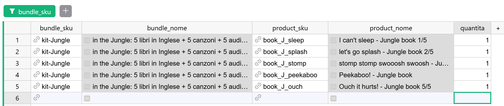
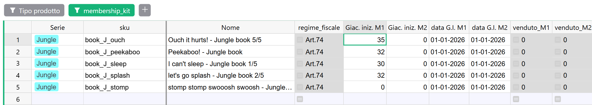

Guida 5
Catalogo, articoli e kit
Versione dell'11/09/2026 · Sistema «Magazzino LwM»
Questa è la guida dell'anagrafica: come si crea un articolo, come si completa quello che il sistema ha creato da solo, come si costruisce un kit, e cosa fare quando un prodotto cambia.
È anche la guida in cui si decide la qualità di tutto il resto. Ogni vendita chiede all'articolo il suo regime fiscale, ogni report gli chiede nome e prezzo di copertina, ogni giacenza parte da lui. Un articolo incompleto non blocca niente: produce numeri sbagliati che sembrano giusti.
§1 In breve
Il catalogo vive in due posti: WooCommerce, dove si vende, e la tabella Articoli in Grist, dove si contano le giacenze e da cui escono i report. I due vanno tenuti allineati a mano, perché nessun automatismo copia il catalogo da una parte all'altra.
Accanto agli articoli ci sono due tabelle che servono a loro: Bundle, che contiene la ricetta di ogni kit, e Prodotti, che è una copia del catalogo del sito e che puoi anche non toccare mai (sezione 3).
Il principio da ricordare è uno solo: le informazioni di un articolo non vengono copiate sulle vendite, vengono lette ogni volta. Da qui discende la regola che attraversa tutta la guida:
- un dato sbagliato si corregge, e la correzione sistema anche il passato;
- un prodotto che cambia davvero — un nuovo prezzo di copertina, un'aliquota diversa — non si modifica: diventa un articolo nuovo.
§2 Le regole del catalogo
Ogni modifica sul sito si ripete in Grist
Quando tocchi il catalogo di WooCommerce, in Grist va fatto il gesto corrispondente. Almeno nella tabella Articoli, sempre.
| Sul sito hai… | In Grist |
|---|---|
| Creato un prodotto nuovo | Crei l'articolo (sezione 7). Se prima arriva un ordine, lo crea il sistema e tu lo completi (sezione 8) |
| Aggiunto una taglia a una maglietta | Crei l'articolo della nuova variante (sezioni 5 e 7) |
| Corretto un dato sbagliato: nome, prezzo, classe fiscale | Correggi lo stesso dato in Articoli |
| Cambiato una caratteristica vera del prodotto | Non si modifica: si crea un prodotto nuovo, sul sito e in Grist (sezione 9) |
| Creato un kit | Crei l'articolo-kit e la sua ricetta (sezione 10) |
| Tolto un prodotto dal catalogo | Nulla. L'articolo resta dov'è |
Due regole valgono in ogni caso.
Lo SKU è identico a quello del sito, carattere per carattere. Maiuscole, trattini, spazi: tutto conta. È lo SKU che il sistema usa per riconoscere un prodotto quando arriva un ordine, e se non coincide crea un articolo doppione e ti manda la mail. Ogni prodotto del sito — comprese le singole taglie e i kit — deve avere il suo SKU.
Lo SKU non si cambia. Né in Grist né sul sito. È il filo che lega l'articolo ai suoi ordini e al catalogo di WooCommerce: cambiarlo da una parte sola rompe il collegamento, e cambiarlo da tutte e due non è un'operazione da fare senza Paolo. Se un prodotto deve avere un codice diverso, è un prodotto nuovo (sezione 9).
Perché funziona così — l'anagrafica è letta oggi
Quando guardi una vendita di marzo, il nome del prodotto, il suo regime fiscale e il suo prezzo di copertina non sono scritti sulla riga di marzo: la riga li chiede all'articolo nel momento in cui la apri. Lo stesso fanno i due report fiscali.
È comodo quando correggi un errore: sistemi l'aliquota di un libro e tutte le sue vendite passano da sole nella colonna giusta. Ma è la stessa cosa che succede quando cambi un dato vero: se aumenti il prezzo di copertina di un libro, anche i trimestri già consegnati al commercialista si ricalcolano con il prezzo nuovo (guida 7, sezione 5).
Per questo la regola è: correggere sì, trasformare no. Un prodotto che cambia diventa un articolo nuovo, e quello vecchio resta com'era, con i dati che aveva quando è stato venduto.
Un articolo non si elimina
Un articolo che ha venduto anche una sola volta non si cancella: le righe d'ordine che lo usano perderebbero l'aggancio, e con lui il regime fiscale e l'effetto sulle giacenze. Lo stesso vale per un articolo che fa da genitore a qualche variante o che compare in una ricetta.
Non devi ricordarti tu questi casi: nella pagina Articoli la colonna check_elimina li controlla per te.
- Se mostra «⚠ Non eliminare!», l'articolo non si elimina.
- Se è vuota, eliminarlo non rompe niente. Ma nella maggior parte dei casi non c'è motivo di farlo: un articolo fuori catalogo può restare dov'è per sempre.
§3 I campi che si compilano da soli
Sei campi di Articoli si riempiono automaticamente quando l'articolo nasce, se in quel momento il prodotto è già presente nella tabella Prodotti: nome, prezzo di listino, aliquota, genitore, tipo di variante e virtuale.
Lo fanno una volta sola. Le conseguenze sono due, e vanno sempre tenute insieme:
- quello che correggi a mano resta: nessun automatismo tornerà a sovrascriverlo;
- quello che alla nascita era vuoto resta vuoto per sempre, anche se il prodotto viene aggiunto a
Prodottiil giorno dopo.
L'unico modo per riempire un campo nato vuoto è scriverlo a mano, copiando il valore dalla pagina Prodotti o direttamente dal sito.
Da qui una regola pratica: in un articolo nuovo, lo SKU si scrive per primo. Il record nasce nel momento in cui scrivi il primo dato. Se quel dato è lo SKU, il sistema trova subito il prodotto corrispondente e compila quello che può. Se cominci dal nome, l'articolo nasce senza SKU, non trova niente, e quei sei campi restano vuoti anche dopo che lo SKU l'hai scritto.
Tutto questo riguarda l'anagrafica. Nelle righe d'ordine alcuni valori si comportano diversamente e si ricalcolano quando cambiano i dati da cui dipendono: è un'altra regola, e riguarda gli ordini.
Lo specchio del catalogo: la tabella Prodotti
Prodotti è una copia del catalogo di WooCommerce, con la versione italiana e quella inglese di ogni prodotto su righe separate. Serve a una cosa sola: passare i sei campi qui sopra a un articolo nel momento in cui nasce.
Quattro cose da sapere:
- oggi si aggiorna a mano, e il suo futuro è ancora da decidere;
- il sistema funziona anche se non è aggiornata: tutto quello che conta sta in
Articoli, e i campi si possono sempre scrivere a mano; - la riga in
Articoliva creata comunque: un prodotto presente solo inProdotti, per il resto del sistema, non esiste; - l'ordine conta. Se la riga di
Prodottic'è già quando nasce l'articolo, i campi si compilano da soli. Se l'articolo nasce prima — ed è il caso normale degli articoli creati dal sistema all'arrivo di un ordine — restano vuoti, e aggiornareProdottidopo non li riempie.
§4 Aliquota e regime fiscale
Il regime fiscale di un articolo non si scrive: si sceglie l'aliquota, e il regime si calcola. L'aliquota è il campo aliquota_imposta, e usa gli stessi codici delle classi fiscali di WooCommerce.
Scegli in aliquota_imposta | Il regime diventa | Quando si usa |
|---|---|---|
standard | 22% | I prodotti al 22% |
reduced-rate | 4% | I prodotti al 4% |
zero-rate | Art.74 | I prodotti in Art.74. È la scelta da usare per gli articoli nuovi |
nessuna-tariffa | Art.74 | Anche questa è Art.74: esiste perché sul sito sono in uso entrambe le classi |
parent | Quello del genitore | Solo sulle varianti: l'aliquota la decide il prodotto principale (sezione 5) |
Scegli sempre un'aliquota, anche quando è standard. Il perché è nel riquadro qui sotto.
Una riga d'ordine: un libro, una taglia di maglietta, un kit
│
▼
l'articolo con quello SKU
│
▼
che aliquota ha?
┌───────────────────────┼─────────────────────────┐
│ │ │
standard, reduced-rate, parent vuota
zero-rate, nessuna-tariffa │ │
│ ▼ │
│ c'è in Articoli un genitore │
│ con lo SKU scritto in `genitore`? │
│ │ │ │
│ SÌ NO ─────────────┤
│ │ │
│ ▼ ▼
│ vale l'aliquota del genitore 22%
│ │ (nessun avviso)
▼ ▼
il regime: Art.74 · 4% · 22%
│
▼
REPORT Corrispettivi · REPORT Art. 74
letto ogni volta che apri la pagina
Tre cose che la figura non dice.
Il regime di un kit è quello dell'articolo-kit. Nel Registro Corrispettivi l'intero valore del kit va sotto il suo regime; nel Report Art.74 contano invece i pezzi, ciascuno con il proprio. La guida 7 (figura 2) spiega perché.
«Alert regime fiscale» si accende quando la versione italiana e quella inglese dello stesso prodotto hanno classi fiscali diverse sul sito. È un errore del catalogo di WooCommerce, e va corretto lì. Grist non si riallinea da solo: se anche l'articolo ha l'aliquota sbagliata, si corregge a mano.
«Senza regime fiscale» diverso da zero, nel Registro Corrispettivi, vuol dire che su un articolo c'è un'aliquota che Grist non sa leggere — un valore fuori dall'elenco, arrivato dal sito — oppure che una riga d'ordine non si è agganciata a nessun articolo. Si risale all'articolo e si sceglie l'aliquota giusta.
Correggere un'aliquota sbagliata è un gesto sicuro e voluto: tutte le vendite di quell'articolo, anche passate, passano nel regime corretto. Se invece il regime di un prodotto cambia davvero, non si tocca l'aliquota: sezione 9.
§5 Prodotti semplici, con varianti e varianti
Il campo tipo_variation dice che tipo di prodotto è l'articolo. Le scelte sono tre.
simple — un prodotto senza varianti. Un libro, un CD. È il caso più comune, e l'articolo sta in piedi da solo.
variable — un prodotto che ha delle varianti. Una maglietta, le cui varianti sono le taglie. Questa riga fa da cappello a tutta la famiglia:
- contiene l'aliquota di tutta la famiglia;
- non compare mai nelle righe d'ordine, perché nessuno compra «la maglietta»: si compra una taglia;
- non ha giacenza, e infatti non compare nella pagina Giacenze.
variation — una variante specifica. Ogni taglia è un articolo a sé, con il suo SKU, le sue vendite e la sua giacenza. È collegata al suo genitore tramite il campo genitore, che contiene lo SKU del prodotto variable, scritto esattamente.
Dal genitore la variante eredita soltanto l'aliquota, e solo se la sua è parent. Tutto il resto — nome, serie, tipo prodotto, taglia — ogni variante lo ha per conto suo.
Il campo nome_variation tiene insieme la famiglia: sul genitore vale il suo SKU, sulle varianti lo SKU del genitore. Si calcola da solo — ha lo sfondo grigio — ed è la chiave con cui la pagina Giacenze T-Shirt costruisce una riga per ogni modello.
(SKU inventati per l'esempio)
┌──────────────────────────────────────┐
│ TS-JUNGLE │
│ tipo_variation: variable │
│ aliquota_imposta: standard ◄──── l'aliquota di tutta la famiglia
│ nome_variation: TS-JUNGLE │
│ mai negli ordini · nessuna giacenza │
└───────▲─────────────▲─────────────▲──┘
│ │ │
genitore: TS-JUNGLE │ │
│ │ │
┌─────────────────┴──┐ ┌────────┴─────────┐ ┌─┴─────────────────┐
│ TS-JUNGLE-S │ │ TS-JUNGLE-M │ │ TS-JUNGLE-L │
│ variation │ │ variation │ │ variation │
│ aliquota: parent │ │ aliquota: parent│ │ aliquota: parent │
│ taglia: S │ │ taglia: M │ │ taglia: L │
└────────────────────┘ └──────────────────┘ └───────────────────┘
nome_variation = TS-JUNGLE su tutte e quattro le righe:
è quello che le mette sulla stessa riga delle Giacenze T-Shirt
Perché una maglietta compaia correttamente nella matrice delle taglie servono tutte queste cose insieme, sulla riga della variante: tipo_variation su variation, il genitore giusto, Tipo prodotto su t-shirt e la taglia. La taglia si sceglie sempre a mano, dal menu: non si compila mai da sola. Se manca, il pezzo finisce nella colonna N.C. della matrice (guida 6).
tipo_variation, genitore, nome_variation e aliquota_imposta in vista.§6 La scheda di un articolo completo
Questa è la lista da ripassare ogni volta che crei un articolo o ne completi uno creato dal sistema. Tutti i campi, tranne le giacenze, stanno nella pagina Articoli.
| Campo | Cosa ci va | Se manca o è sbagliato |
|---|---|---|
sku | Identico a quello del sito. Si scrive per primo | Al primo ordine nasce un doppione |
Nome | Il nome del prodotto | È il titolo che compare nel Report Art.74 |
aliquota_imposta | Sempre scelta, anche standard (sezione 4) | Vale 22%, senza avvisi |
tipo_variation | simple, variable o variation (sezione 5) | La variante resta fuori dalla matrice magliette |
genitore | Solo sulle varianti: lo SKU del prodotto variable | Il regime della variante diventa 22% |
prezzo_listino | Il prezzo di copertina, su tutto ciò che è in Art.74 | Nel Report Art.74 le copie ci sono, i valori restano a zero |
| Serie | La collezione | Nei report la riga resta senza serie |
| Tipo prodotto | libro, cd, kit o t-shirt | Una maglietta non entra nella matrice |
taglia_tshirt | Solo sulle varianti di magliette, sempre a mano | Il pezzo finisce nella colonna N.C. |
virtual | Acceso sui prodotti senza esistenza fisica: webinar, accesso alla piattaforma | Il prodotto entra nelle giacenze e i suoi ordini chiedono un magazzino |
| Giac. iniz. M1 / M2 e le due date | Nella pagina Giacenze (guida 6). Le date sempre, anche se i pezzi sono zero. I pezzi che hai in magazzino conviene registrarli come carico, non scriverli qui | Le colonne del venduto vanno in errore appena l'articolo compare in una riga d'ordine |
Sul genitore di una famiglia le giacenze non servono: non ha pezzi propri e non compare nella pagina Giacenze.
Se l'articolo è un kit, alla scheda si aggiunge la ricetta: sezione 10.
§7 Creare un articolo a mano
Serve quando un prodotto nuovo sta per andare in vendita, oppure quando devi inserire a mano un ordine che contiene qualcosa che in Grist non c'è ancora (guida 3, sezione 6).
- Prendi lo SKU dal sito, copiandolo invece di riscriverlo.
- Controlla che non esista già nella pagina Articoli, con il filtro dello SKU o con la ricerca (guida 8). Se c'è, non va ricreato.
- Nella riga vuota in fondo alla tabella scrivi per primo lo SKU, e conferma.
- Guarda cosa si è compilato da solo. Se il prodotto era già in
Prodotti, alcuni campi sono pieni: controllali, non darli per buoni. Un'aliquota rimasta vuota va comunque scelta. - Completa la scheda (sezione 6).
- Se è una famiglia con varianti, crea prima il genitore e poi le varianti, ripetendo i passi da 3 a 5 per ciascuna.
- Vai nella pagina Giacenze e inserisci giacenze iniziali e date (guida 6).
- Se è un kit, prosegui con la sezione 10.
Se una riga d'ordine è già stata scritta con quello SKU — la riconosci perché è accesa in arancione, con l'avviso che lo SKU non è stato trovato — creare l'articolo non basta. Torna sulla riga e riseleziona lo SKU dal menu: è quel gesto che la aggancia all'articolo appena creato.
§8 Completare un articolo creato dal sistema
Quando arriva un ordine con uno SKU che Grist non conosce, il sistema crea l'articolo da solo e ti manda la mail «Nuovi articoli creati in Grist automaticamente» (guida 2, sezione 6). Nella pagina Articoli l'articolo ha la casella «da verificare» accesa, in arancione.
Il sistema prende dall'ordine solo quello che c'è: lo SKU, il nome come compare nell'ordine e l'aliquota. Tutto il resto nasce vuoto — prezzo, serie, tipo prodotto, tipo di variante, genitore, virtuale — date delle giacenze comprese.
Se c'è una cosa da fare subito, sono le date: finché mancano, le colonne del venduto di quell'articolo sono già in errore — lo sono dal momento in cui l'ordine che l'ha creato è arrivato.
parent, prezzo di listino vuoto.La verifica, in quest'ordine:
- È davvero un prodotto nuovo? Se in
Articolic'è già un articolo che sembra lo stesso, con uno SKU appena diverso, vuol dire che lo SKU del sito non coincide con quello di Grist. Non correggere lo SKU: è un caso da segnalare (guida 9). - L'aliquota: guardala in Grist, non nella mail. Se è vuota, scegli quella giusta —
standardse il prodotto è davvero al 22%. Se èparent, è una variante: passo 3. - È una variante? Scegli
variationintipo_variation, scrivi nel campogenitorelo SKU del prodotto principale e controlla che quel genitore esista inArticoli: se non c'è, crealo (sezione 7). Per una maglietta: Tipo prodotto sut-shirte la taglia. - È un kit? Crea la ricetta (sezione 10) e leggi il riquadro qui sotto.
- È un prodotto virtuale? Accendi
virtual. - Completa il resto della scheda: nome, prezzo di listino, serie, tipo prodotto (sezione 6).
- Inserisci giacenze iniziali e date nella pagina Giacenze (guida 6).
- Spegni «da verificare». Solo adesso, a scheda finita.
Non lasciare articoli da verificare in sospeso. Un articolo con la casella accesa è una delle voci della checklist di chiusura trimestre (guida 7, sezione 8): se l'aliquota non è risolta, le sue vendite sono già nel report sbagliato. E una casella che resta accesa su molti articoli smette di segnalare qualcosa.
§9 Quando un prodotto cambia: un articolo nuovo
Esce una nuova edizione di un libro con un prezzo di copertina diverso. Un prodotto cambia regime fiscale. In tutti i casi in cui cambia una caratteristica vera del prodotto — non un dato scritto male — la regola è la stessa: non si modifica l'articolo esistente, se ne crea uno nuovo.
- Sul sito, crea un prodotto nuovo con uno SKU nuovo e le caratteristiche nuove.
- Il prodotto vecchio si nasconde dal catalogo, non si cancella. Gli ordini passati continuano a fare riferimento a lui: se un giorno ne rimborsi uno, il rimborso deve poterlo ritrovare.
- In Grist, crea l'articolo nuovo (sezione 7). Quello vecchio resta com'è, con i dati di quando è stato venduto.
- Se il prodotto stava in un kit, aggiorna la ricetta sostituendo il componente vecchio con quello nuovo (sezione 11).
- Se in magazzino ci sono ancora pezzi registrati sul vecchio articolo che da ora vendi con il nuovo SKU, spostali con un movimento: un solo record
Altri movimenti, stesso magazzino, una riga positiva sullo SKU vecchio e una negativa sul nuovo. La procedura è nella guida 6.
In questo modo i report dei periodi passati restano uguali a quelli che hai consegnato, e i nuovi partono con i dati giusti.
§10 I kit
Le tre cose che servono
Un kit, in Grist, esiste solo se ci sono tutte e tre queste cose:
- i componenti, come articoli completi in
Articoli; - il kit stesso, come articolo in
Articoli, con lo SKU con cui è venduto sul sito; - la ricetta, nella pagina Bundle: una riga per ogni componente.
Ognuna ha il suo lettore. Il Registro Corrispettivi legge l'articolo-kit: tutto il valore della vendita va sotto il regime del kit. Le giacenze e il Report Art.74 leggono i pezzi, che il sistema aggiunge da solo accanto alla riga del kit usando la ricetta. Un kit non ha giacenza propria (guida 0, regola 9).
Creare un kit
- Controlla che i componenti esistano già in
Articoli, con la scheda completa (sezione 6). Se ne manca uno, crealo prima. - Crea l'articolo-kit (sezione 7):
- lo SKU identico a quello del kit sul sito;
- l'aliquota del regime con cui il kit è venduto;
- Tipo prodotto su
kit.
Le giacenze e il prezzo di listino non servono: un kit non ha pezzi propri e non compare nel Report Art.74.
- Nella pagina Bundle, scrivi la ricetta, una riga per componente:
- in
bundle_skuil kit; - in
product_skuil componente; - in
quantitaquanti pezzi di quel componente ci sono nel kit. La quantità si scrive sempre, anche quando è 1.
- in
Il menu dei componenti non propone i kit: un kit non può contenere un altro kit.
- Controlla il risultato. Con il filtro della pagina Bundle isola il kit e rileggi la ricetta. Poi apri la pagina Giacenze: il kit non deve più comparire, e il filtro dei kit deve mostrarti i suoi componenti.
- Fallo prima che il kit vada in vendita. Il sistema usa la ricetta nel momento in cui arriva l'ordine: un kit venduto senza ricetta non scarica nessun pezzo.
{kind=link}

{kind=link}

Il kit che ha venduto prima di avere la ricetta
Succede quando un kit va in vendita sul sito prima che in Grist esista la sua ricetta, oppure quando l'articolo-kit l'ha creato il sistema all'arrivo del primo ordine (sezione 8).
Come te ne accorgi. Finché la ricetta non c'è, il kit compare nella pagina Giacenze come se fosse un prodotto normale, con numeri che non hanno senso. Nelle righe dell'ordine, sotto la riga del kit, non ci sono i pezzi.
Come si rimedia. Crea la ricetta, poi nella pagina Righe_Ordine filtra sullo SKU del kit: su ogni riga di vendita rimasta senza pezzi, e con bundle_esploso spento, accendi esplodi_bundle. (comportamento atteso, non ancora verificato sul campo) Gli eventuali resi di quel kit compariranno invece nella pagina Resi di kit da esplodere (guida 4).
Sulle vendite, a differenza dei resi, nessuna pagina di controllo intercetta questo caso: è il motivo per cui la ricetta va creata prima.
§11 Cambiare la ricetta di un kit
La ricetta viene letta nel momento in cui un kit viene esploso, e un kit viene esploso due volte nella sua vita: quando si vende e quando torna indietro. Cambiare la ricetta non tocca le vendite già registrate, ma vale per tutto quello che succede dopo — resi di vendite passate compresi.
MARZO APRILE MAGGIO
si vende un kit cambi la ricetta il cliente rende
ricetta: A + B + C A + B + D il kit di marzo
│ │ │
▼ ▼ ▼
escono A, B, C la vendita di marzo il reso viene esploso
non cambia: con la ricetta di OGGI:
sono usciti A, B, C rientrano A, B, D
│
▼
C non torna in magazzino,
D risale senza essere mai uscito
La strada raccomandata: un kit nuovo. Se la composizione di un kit cambia, crea un kit nuovo con uno SKU nuovo, anche sul sito, e la sua ricetta (sezione 10). Il kit vecchio si nasconde dal catalogo e la sua ricetta resta intatta: i resi delle vendite passate continueranno a far rientrare i pezzi giusti.
Se proprio serve modificare la ricetta — e c'è un caso in cui è la strada giusta: quando un componente è stato sostituito da un articolo nuovo (sezione 9) — modificala sulla riga del componente, nella pagina Bundle. Poi tieni a mente la conseguenza della figura: ogni reso futuro di un kit venduto prima della modifica va corretto a mano. Sulle righe dei pezzi di quel reso, cambia lo SKU del componente che non era nel kit con quello che c'era davvero, come si fa per un ordine singolo (guida 3, sezione 9). (comportamento atteso, non ancora verificato sul campo)
§12 Attenzione a
I sette errori che questa guida serve a evitare. Nessuno di questi produce un messaggio di errore.
Modificare il catalogo sul sito senza ripetere il gesto in Grist. I due cataloghi non si parlano. Quello che non riporti in Articoli non esiste per le giacenze e per i report.
Cambiare uno SKU. Rompe il collegamento fra l'articolo, i suoi ordini e il sito. Un prodotto con un codice nuovo è un prodotto nuovo.
Modificare un articolo invece di crearne uno nuovo. Correggere un errore è giusto; cambiare prezzo o regime a un prodotto che è cambiato davvero riscrive anche i trimestri passati.
Eliminare un articolo con «⚠ Non eliminare!». Le righe d'ordine, le varianti o le ricette che lo usano perdono l'aggancio.
Lasciare l'aliquota vuota. Vale 22%, in silenzio. Si sceglie sempre, anche standard.
Dimenticare le date delle giacenze. Le colonne del venduto vanno in errore appena l'articolo compare in una riga d'ordine, e su un articolo creato dal sistema questo è già successo.
Modificare la ricetta di un kit senza pensare ai resi. I resi delle vendite passate verranno esplosi con la ricetta nuova. Se il kit cambia, meglio un kit nuovo.
§13 Se qualcosa va storto
| Il sintomo | La causa probabile | Cosa fare |
|---|---|---|
| Le colonne del venduto di un articolo sono in errore | Mancano le date delle giacenze iniziali | Inseriscile nella pagina Giacenze (guida 6) |
| Una riga d'ordine è accesa in arancione: SKU non trovato | L'articolo non esiste, o lo SKU è diverso | Crea l'articolo (sezione 7), poi riseleziona lo SKU sulla riga |
| Nel Registro, «Senza regime fiscale» è diverso da zero | Un'aliquota che Grist non sa leggere, o una riga senza articolo | Risali all'articolo e scegli l'aliquota (sezione 4) |
| Un titolo del Report Art.74 ha le copie ma i valori a zero | Manca il prezzo di listino | Compilalo in Articoli: il report si aggiorna da solo |
| Un libro Art.74 finisce nella colonna del 22% | Aliquota vuota, oppure variante senza genitore | Sezioni 4 e 5 |
| I componenti di un kit non scendono | La ricetta manca, lo SKU del kit non coincide con il sito, o il kit ha venduto prima della ricetta | Sezione 10 |
| Un kit compare nella pagina Giacenze | Non ha ancora una ricetta, oppure la ricetta è stata cancellata | Sezioni 10 e 11 |
| Una maglietta non compare nelle Giacenze T-Shirt | Manca Tipo prodotto, tipo_variation o il genitore | Sezione 5 |
Una maglietta compare nella colonna N.C. | Manca la taglia | Sceglila dal menu (sezione 5, guida 6) |
| Arriva la mail di un articolo nuovo per un prodotto che esiste già | Lo SKU sul sito non coincide con quello in Grist | Non correggere lo SKU: guida 9 |
§14 Dove si continua
| Se vuoi… | Guida |
|---|---|
| Capire quando il sistema crea un articolo e cosa dice la mail | 2 |
| Inserire un kit in un ordine, o sostituire un pezzo in un ordine solo | 3 |
| Capire cosa succede quando un kit torna indietro | 4 |
| Inserire giacenze iniziali e date, leggere la matrice delle magliette | 6 |
| Capire come i kit e i prezzi di copertina entrano nei report | 7 |
| Filtrare e cercare un articolo | 8 |
| Segnalare uno SKU che non coincide, o rimediare a un articolo eliminato | 9 |